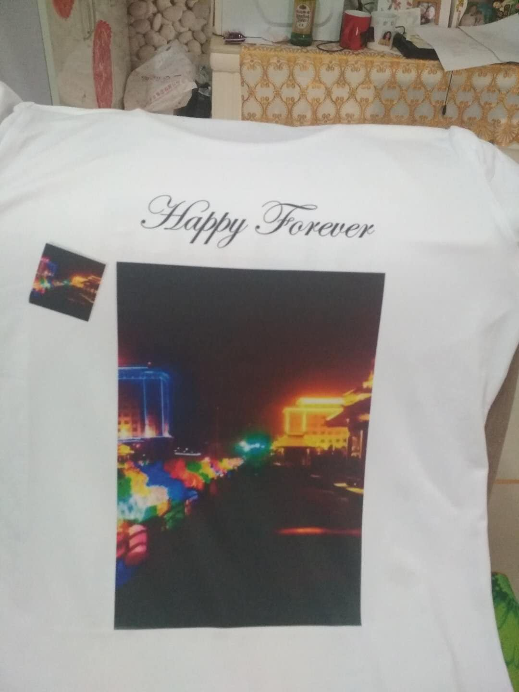

切换站点概览
目录
你已经读了
0
%
Smbands
This is my personal blog.
Follow me
文章
17
标签
7
分类
6
Smbands
Home
总览
分类
标签
关于我
DIYprint
2020-02-27
|
DIY-print

文章作者:
Smbands
文章链接:
http://smbands.top/2020/02/27/DIYprint/
版权声明:
本博客所有文章除特别声明外，均采用
CC BY-NC-SA 4.0
许可协议。转载请注明来自
Smbands
！
DIY-print
zabbix基础应用之添加触发器